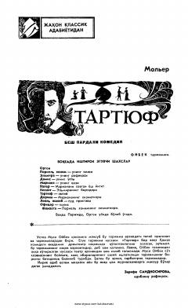

TIkkiyuzlamachilik va riyokorlikni fosh etuvchi klassik komediya.
Molyerning ushbu mashhur komediyasi ikkiyuzlamachilik va riyokorlik illatlarini fosh etadi. Asar Oybak tarjimasida taqdim etilgan bo'lib, unda Tartuf ismli firibgarning Orgon xonadoniga kirib borishi va oila tinchligini buzishi tasvirlanadi.